Objective
To design the UI for the mobile version of a vintage clothing sales applicaiton and prepare for handover to developers.
Role
UI Designer
Tools
Competitor Research
I researched multiple mobile clothing store apps to understand their features, the design principles utilized, & usability heuristics
Depop
Recognition Rather than Recall: The categories for each article of clothing in ths app has the hart icon for likeing each clothing item you want to be saved in your profile so you can look back on it at a later time.
Emphasis: In the Depop app there is an exmphasis placed on the photos when you are scrolling between them there is a changed in the slider dots from white to orange.
Similarity: My DNA home of the app, the first thing you see is several boxes with a rounded edge and the ability to swipe to the left and continue to see the same style based on size and shape.
Poshmark
Consistency & Standards: At the bottom of the menu bar the sell icon (camera in this case) is in the middle of the menu bar. I have noticed on both Poshmark and Depop applicaitons that this feature shows up.
Variety: In the shop category you have several different shapes such as circles, squares, Icons and diamonds to get your attention.
Low-Fidelity
Once I had a feel for competitors I started to sketch low-fidelity wireframes with pen & paper.
 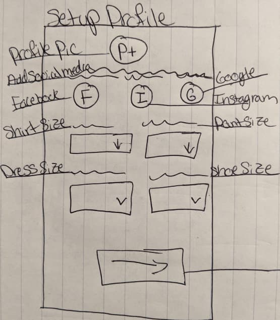
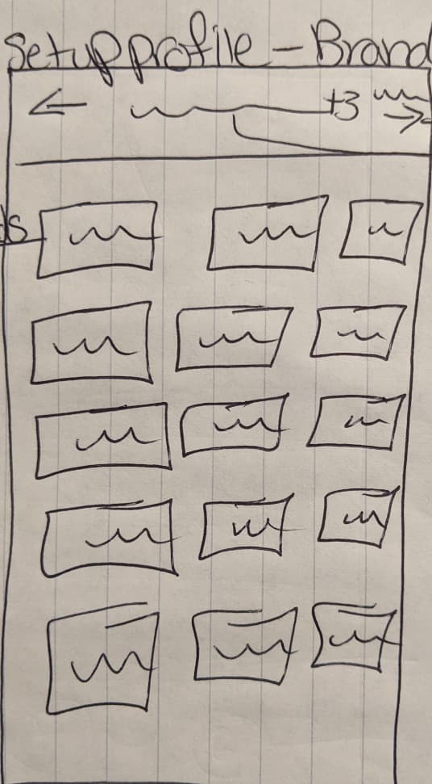
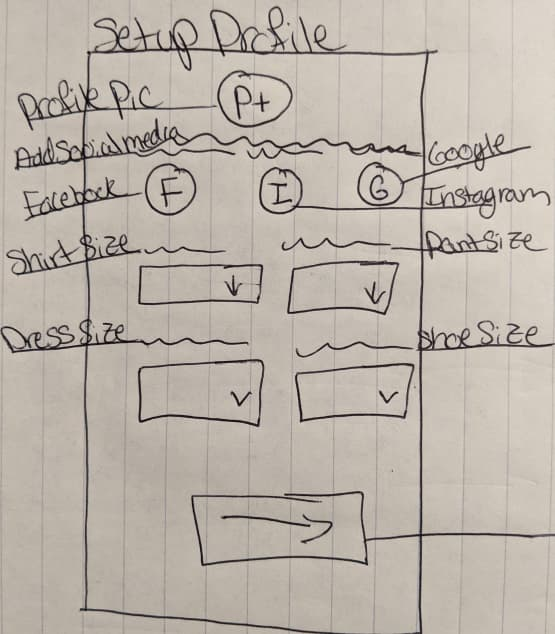
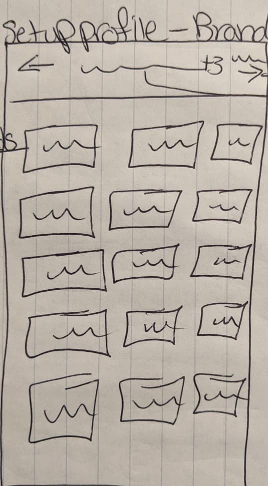
 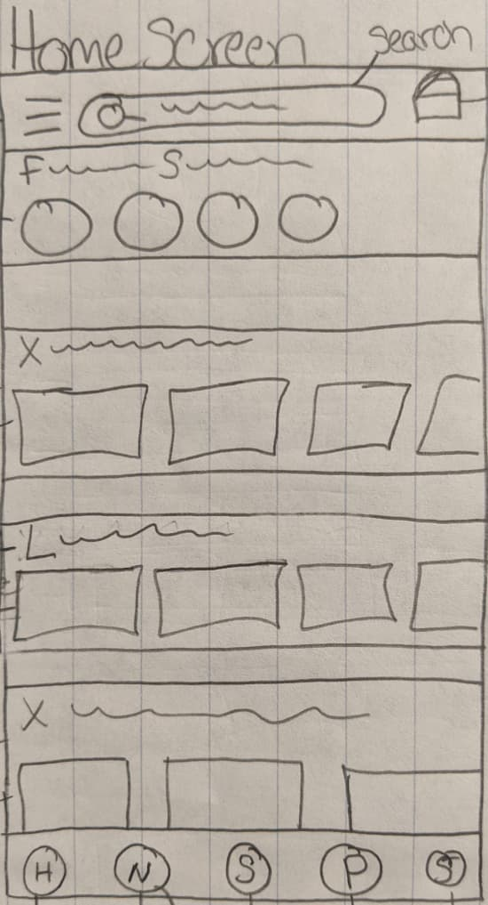
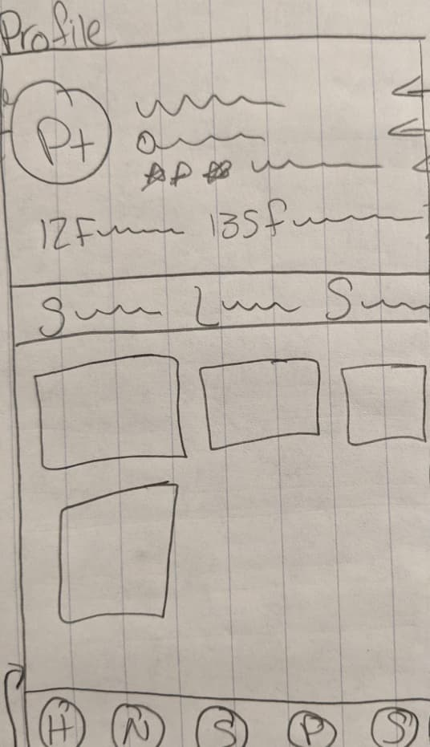
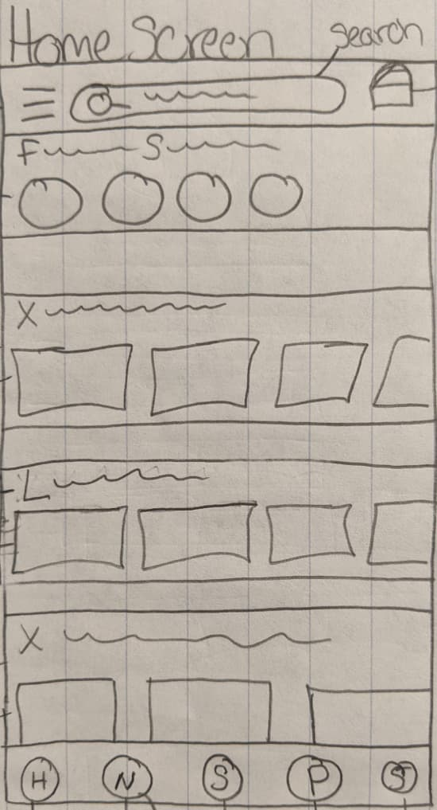
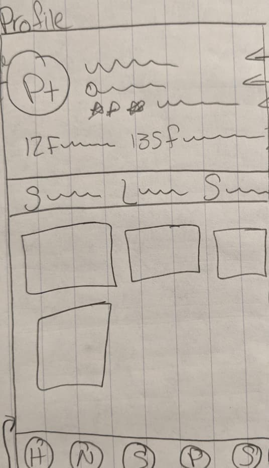
 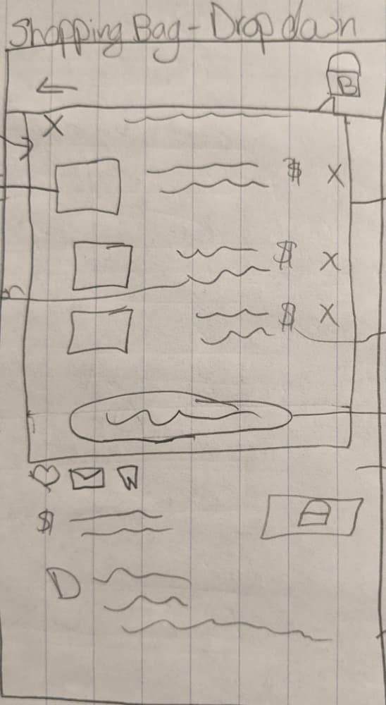
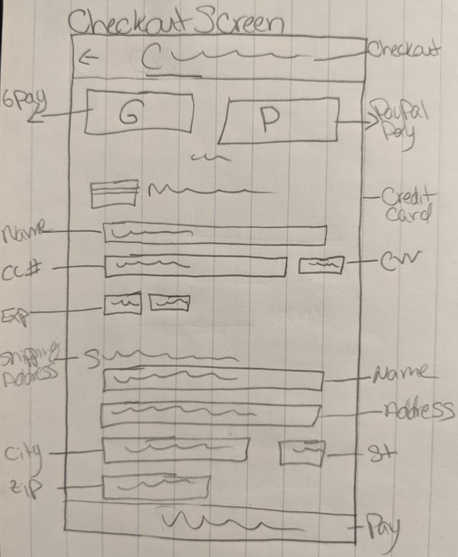
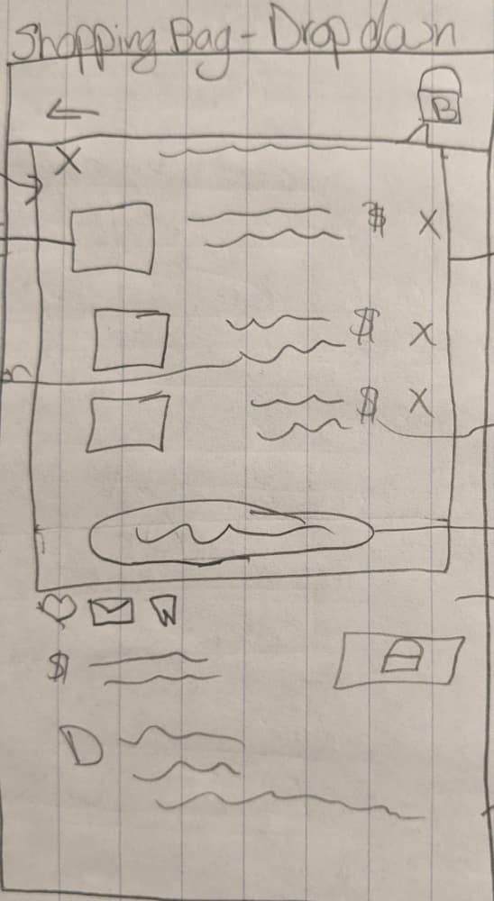
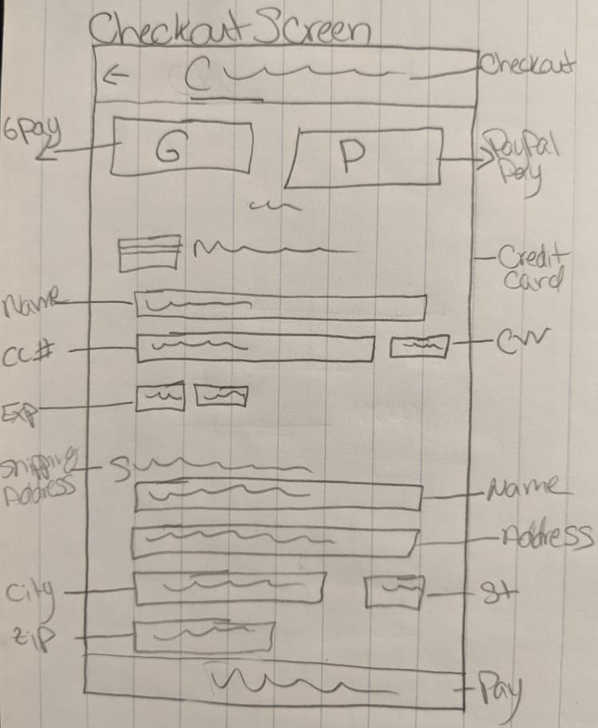
Mid-Fideltiy
I then recreated my paper sketches in Adobe XD for my mid-fi wireframes
Style Guide
The Chic Threads style guide is created to envoke the nostalgia feeling of previous eras gone by, while also looking professional.
Color Palette
Typography
Icons
High-Fidelity